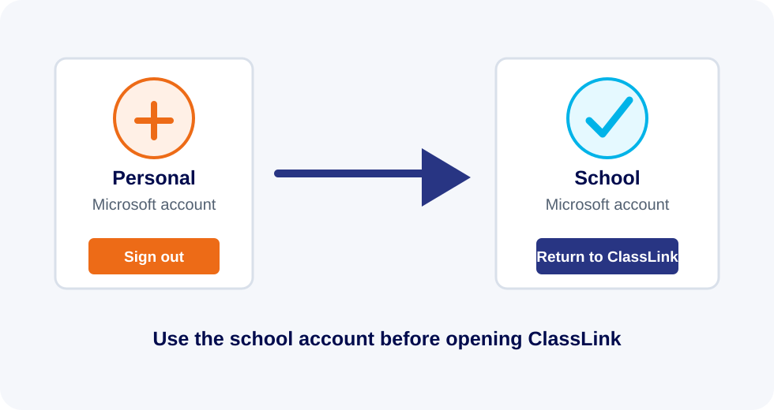

If ClassLink is defaulting to your personal Microsoft account instead of your school account, it is usually because a personal account has previously been used on the device and kept signed in.

Fix the account selection
- Go to https://myaccount.microsoft.com/.
- Select your profile picture or initials in the top-right corner.
- Sign out of your personal Microsoft account.
- Make sure your school account is the only account signed in. Sign in with your school account if needed.
- Go back to ClassLink. It should now take you through using your school account.
If ClassLink still chooses the wrong account, submit a support ticket and IT can help clear the browser sign-in state.